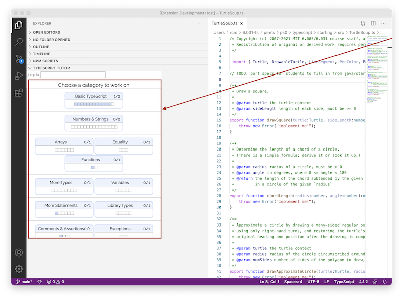

6.102
6.102 — 软件构造
2026 年春季
阅读 4：规格说明
引言
行为等价性
为什么需要规格说明？
规格说明的结构
TypeScript 中的规格说明
规格说明可以谈论什么
避免 null
包含空值
测试与规格说明
修改函数的规格说明
异常
特殊结果
模块
总结
阅读 4：规格说明
Praxis Tutor 练习
通过在 Praxis Tutor 中完成以下类别来继续推进 TypeScript 的学习：

✓
注释与断言
1/1
✓
异常
1/1
6.102 中的软件
免受 bug 困扰
易于理解
适应变化
今天正确，在未来未知的情况下也正确。
与未来的程序员（包括未来的你自己）清晰地沟通。
设计为无需重写即可适应变化。
学习目标
理解函数规格说明中的前置条件和后置条件，并能够编写正确的规格说明
能够针对规格说明编写测试
理解如何使用异常